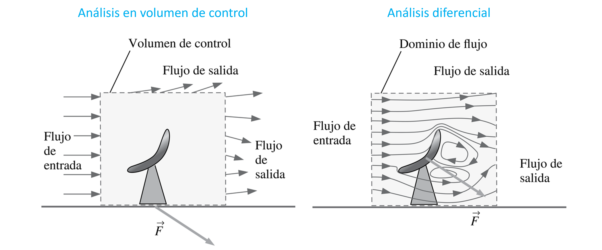
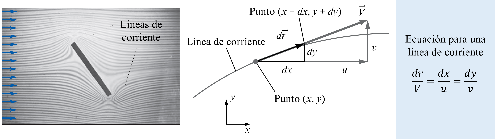
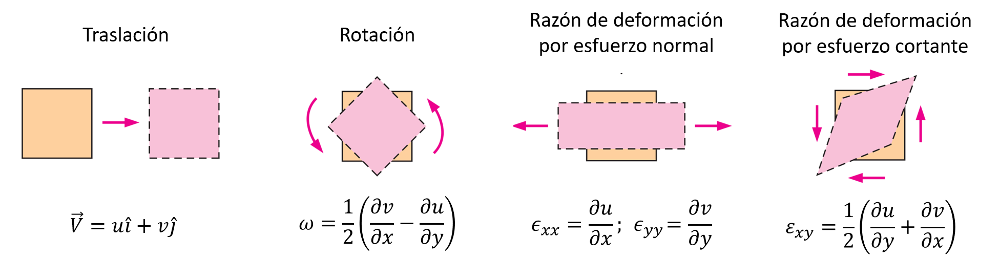
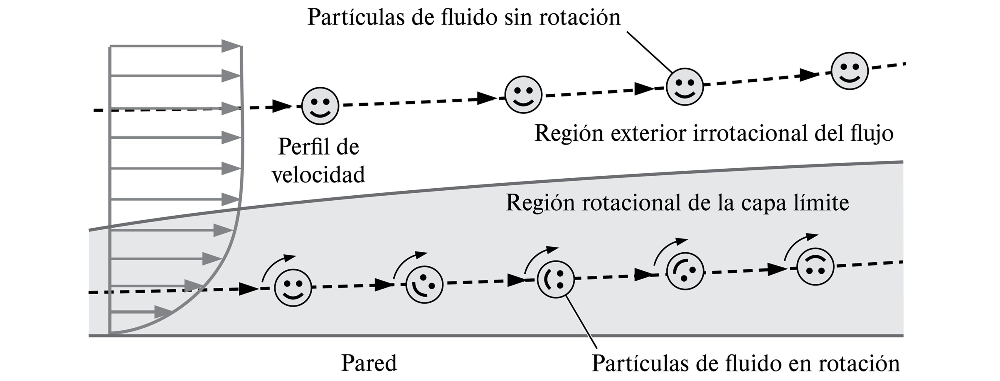
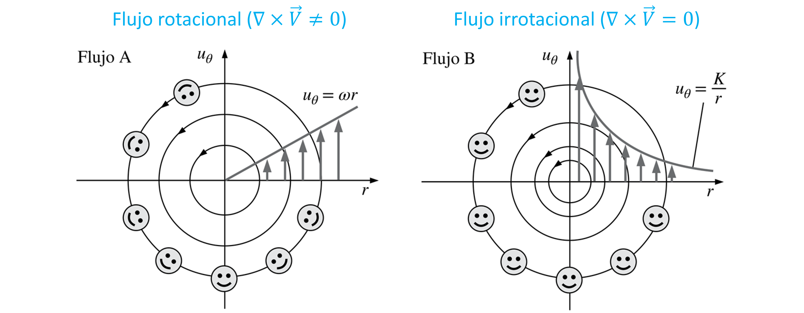

Análisis diferencial de flujos
Contents
7. Análisis diferencial de flujos#
7.1. Introducción#
Hasta ahora hemos utilizado un enfoque integral, donde aplicabamos las ecuaciones de convervación a un volumen de control. El análisis de volumen de control es útil cuando se esta interesado en las características globales de un flujo y los cuerpos con los que interactúa, por ejemplo: fuerzas de arrastre, energía de una bomba o turbina, velocidades promedio en un ducto, etc.
{kind=link}
El análisis diferencial, por otro lado, permite determinar las interacciones de un fluido con una estructura en cada punto dentro del volúmen de control.
En esta unidad revisaremos los aspectos generales del análisis diferencial de flujos. Comenzaremos por revisar los aspectos básicos de cálculo vectorial y cinemática de fluidos. Luego derivaremos las ecuaciones de conservación de masa y momento lineal en su forma diferencial. Finalizaremos con las ecuaciones de Navier Stokes, que definen la piedra angular de la mecánica de fluidos
7.2. Repaso de cálculo vectorial#
7.2.1. Campo vectorial y escalar#
Como vimos en la unidad 3 del curso, en el análisis euleriano de mecánica de fluidos trabajamos con variables de campo, es decir, variables que dependen del tiempo (\(t\)) y el espacio dentro del volumen de control (\(x, y,z\)). Las principales son:
Donde el campo de velocidad se define por la componente de tres vectores:
donde \(u\), \(v\) y \(w\) son las componentes de la velocidad e direcciones \(x\), \(y\) y \(z\), respectivamente.
7.2.2. Operadores diferenciales#
Debido a la cantidad de variables independientes presentes en cada variable, es conveniente utilizar operadores para analizar tasas de cambio y otras caracteristicas de una variable de campo.
Para esto definimos el operador \(\nabla\) o “del”, como:
El operador \(\nabla\) es un vector que aplica una derivada espacial a una variable de campo. La forma que toma este operador depende del tipo de variable y del producto vectorial aplicado.
Algunos ejemplos son:
7.2.2.1. Gradiente. \(\nabla(\quad)\)#
Es equivalente a la derivada de una función, pero en múltiples dimenciones. Permite identificar zonas de crecimiento o decrecimiento de una variable de campo.
Si el gradiente se aplica a un campo escalar, el resultado es un campo vectorial. Por ejemplo, el gradiente de la densidad es:
Si el gradiente se aplica a un campo vectorial, el resultado es un tensor de orden 2. Por ejemplo, el gradiente de la velocidad es:
7.2.2.2. Divergente. \(\nabla\cdot(\quad)\)#
Solo se aplica a campos vectoriales. Se define como el producto punto entre el operador Del y un campo vectorial:
El divergente permite medir cuanto un campo vectorial diverge o converge respecto de un punto en cuestión.
Por ejemplo:

(a) \(\nabla\cdot\vec{V} \gt 0\)
(b) \(\nabla\cdot\vec{V} = 0\)
(c) \(\nabla\cdot\vec{V} \gt 0\)
7.2.2.3. Rotacional. \(\nabla\times(\quad)\)#
Solo se aplica a campos vectoriales. Se define como el producto cruz entre el operador Del y un campo vectorial:
El rotacional una medida de cuanto un campo vectorial rota respecto de un punto en cuestión.
Por ejemplo:

(a) \(\nabla\times\vec{V} \gt 0\)
(b) \(\nabla\times\vec{V} \gt 0\)
Notar que en la figura, el divergente, \(\nabla\cdot\vec{V} = 0\) en todos los casos.
7.3. Fundamentos de la cinemática de fluidos#
7.3.1. Líneas de corriente#
Una línea de corriente es una curva que, en todas partes, es tangente a la velocidad local instantánea. Son útiles para identificar el movimiento del fluido en todo el campo de flujo.
{kind=link}
7.3.2. Tipos de movimiento o deformación de un elemento fluido#
Un elemento fluido puede pasar por cuatro tipos fundamentales de movimiento.
{kind=link}
La traslación está simplemente dada por \(\vec{V}\).
La razón de rotación está caracterizada como el promedio del operador rotacional, on \(\omega = \frac{1}{2}\nabla\times \vec{V}\)
En el caso de los esfuerzos, utilizamos un tensor de deformación:
En coordenadas cartesianas:
Los elementos de la diagonal (\(\varepsilon_{xx}\), \(\varepsilon_{yy}\) y \(\varepsilon_{zz}\)) representan la deformación por esfuerzos normales. El resto de los elementos, corresponde a la deformación por esfuerzos cortantes.
7.3.3. Rotacionalidad y viscosidad#
Un flujo es rotacional si \(\nabla\times\vec{V} \neq 0\). En este caso, los elementos de fluido giran.
Generalmente, los efectos de rotación implican la presencia de efectos viscosos (aunque no siempre). Así, es común que un flujo sea rotacional (\(\nabla\times\vec{V} \neq 0\)) en las regiones no viscosas.
{kind=link}
Notar que no todos los flujos circulares son rotacionales:
{kind=link}
7.3.4. Derivada material#
En el enfoque euleriano las variables dependen del tiempo y del espacio. Así, debemos definir un nuevo operador para evaluar la tasa de cambio de una variable. Este operador será equivalente a la derivada temporal \(d/dt\) utilizado en el enfoque lagranfiano.
Analicemos, por ejemplo, la aceleración (\(\vec{a}\)) de una partícula de fluido considerando ambos enfoques.
Según el enfoque lagrangiano, la aceleración de una partícula con velocidad \(\vec{V}\), es: \(\vec{a} = \frac{d \vec{V}}{dt}\)
Según el enfoque euleriano, la aceleración de una partícual en un volumen de control:
Hemos definido un nuevo operador, denominado derivada material (o sustancial), \(\frac{D}{Dt}\) o \(\frac{d}{dt}\) que describe la variación temporal de una partícula de fluido a medida que se mueve por el campo de flujo:
El término \(\frac{\partial}{\partial t}(\quad)\) se denomina variación temporal local y es cero para flujos estacionarios.
El término \(\vec{V}\cdot\nabla(\quad)\), se denomina término convectivo, este término puede ser diferente de cero inclusive para flujos estacionarios
La derivada material se puede aplicar a otras propiedades de fluidos, como por ejemplo, la densidad:
7.4. Ecuaciones de conservación en forma diferencial#
A partir de los conceptos revisados anteriormente podemos intepretar los patrones de flujo y perfiles de velocidad que caracterizan la interacción de un fluido con una estructura

A continuación derivaremos las ecuaciones diferenciales que gobiernan estos patrones de flujo.
La derivación de cada ecuación fundamental puede ser realizado de dos formas:
Mediante un balance en un volúmen de control diferencial (revisar referencias)
Utilizando el teorema de Gauss o teorema de la divergencia que establece:
la integral en una superficie cerrada \(S\) de un campo vectorial \(\vec{f}\) es igual a la integral de la divergencia de \(\vec{f}\) sobre un volumen \(V\) dentro de la superficie
Matemáticamente:
(7.10)#\[\begin{equation} \oint_A \vec{f}\cdot\hat{n} dA = \int_V \nabla\cdot \vec{f} d\forall \end{equation}\]
7.4.1. Ecuación de conservación de masa (continuidad)#
Comenzamos con la ecuación de conservación de masa aplicado sobre un volumen de control fijo e indeformable:
Para satisfacer esta ecuación el integrando debe ser cero, y tenemos:
A partir de la identidad, \( \nabla\cdot(\rho\vec{V}) = \vec{V}\cdot\nabla\rho + \rho(\nabla\cdot\vec{V})\), derivamos la ecuación de conservación de masa en su forma diferencial:
Esta ecuación también se conoce como la ecuación de continuidad.
7.4.2. Ecuación de conservación de momento lineal#
Podemos aplicar el mismo criterio sobre la ecuación de conservación de momento lineal:
Como vimos en la unidad 6, la fuerza externa sobre un volumen de control es el resultado de la distribución de presiones y tensiones de corte. En una perspectiva general, también debemos considerar el efecto de la gravedad. La expresión para las fuerzas externas es, entonces:
Donde \(\bar{\tau}\) es el tensor de esfuerzos
Usando el teorema de la divergencia, podemos reordenar la expresión (7.13) como:
donde \(\bar{I}\) es el tensor identidad.
Combinando las ecuaciones (7.12) y (7.15), tenemos:
Aplicamos la identidad \( \nabla\cdot\left(\rho\vec{V}\vec{V}\right) = \vec{V}\nabla\cdot\left(\rho\vec{V}\right) + \rho\vec{V}\cdot\nabla\vec{V} \) para obtener:
El primer término de la izquierda corresponde a la ecuación de continuidad (7.11). Así, la ecuación de conservación de momento lineal en su forma diferencial es:
Esta ecuación también se conoce como la Ecuación de Cauchy.
7.5. Referencias#
Çengel Y. A. y Cimbala M. J. Mecánica de Fluidos: Fundamentos y Aplicaciones, 4ta Ed., McGraw Hill, 2018
Capitulo 4. Cinemática de fluidos
Capitulo 9. Análisis diferencial de flujo de fluidos
White F. M. Mecánica de Fluidos, 5ta Ed., McGraw Hill, 2004
Capítulo 4. Relaciones diferenciales para una partícula fluida